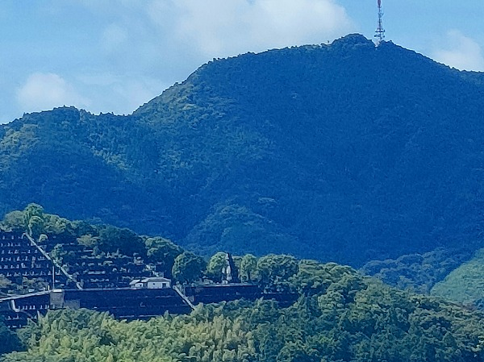

南国土佐である。
県都、高知を訪れる。
市中心部で美味い肴と美味い酒を堪能し（ヒ〇スエがよく来るという店は旨かった！）、県立文学館で行われていた
ムー展などを観たり、と楽しい高知ライフを過ごしていた。
で、高知のシンボルである高知城の天守に登ってみると市街の南に
何やら怪しげなシルエットが。

方角は城の南。
筆山の辺り。大仏のようだ。
日本中の大仏を見てきた私、幸か不幸か
大仏のシルエットがほんの少し見えただけでも即座に反応する身体になってしまっているのですよ。
手持ちのスマホのカメラで最大ズームにして見てみる。
間違いない。半身の大仏様だ！ しかも
私の脳内大仏マップには登録されていない未知なる大仏だ。
これは行くしかあるまい。
というわけで、筆山に向かってみる。
市の南側を流れる鏡川を渡り、筆山の近くまで来た。

おお、まごう事なき大仏様なり。
山の中腹から頭を出しておいでではないか！

それらしき道を捜して大仏様を目指す。
山中に入り、しばらく進むと道の周辺が墓地になってきた。
どうやらかなり広い霊園のようだ。そして道の終わりについに大仏様（いや、正確には観音様だった）が、ボスキャラよろしくその姿を表したのだ。
地図で確認すると、
筆山霊園という巨大な墓地のようだ。
その駐車場の奥、管理事務所のさらに奥に観音様はおわす。
管理事務所はこんな。
やけに禁止事項が多いようで緊張したが、ごみを捨てるなとか無許可で墓地工事するなとか、そういう内容だった。
別に許可なく観音さんに近寄るな、という類のものではなくホッとしたよ。
というわけで、いざ観音様にご挨拶をば。
観音様の手前に階段があったが、観音像とは直接つながっておらず、賽銭箱や花立があるだけだった。
少し離れた高い所から拝んでね、という建立者サイドの気遣いなのだろう。

でもやっぱり近くで見たくなるのが人情というもの。
ぐぐっと寄らせていただきます。
遠くから眺めていても判っていたのだが、観音様は顔周辺にペイントを施している。
頭の上に仏様を乗せ、パイルダーオンしたマジンガーＺっぽい。
そして、なにより印象的なのが真っ赤に塗られた唇。
真っ白な肌は雨だれで黒くなってしまったのが残念、というかチョット不気味。
さらに印象的だったのが観音像が左手に持つ蓮の花。
訪れたのが暑い日だったのでメロン味のソフトクリームにしか見えなかったよ。

観音像は半身で、台座の部分は蓮華座となっている。
手前には「
高知観音」と書かれた石碑がある。
そうか、高地観音と仰るのですね！
何とも不思議な出で立ちの観音像。
もう少し見てみよう。
観音様の裏側に廻ってみる。
１階と２階部分に扉があるじゃないですか！
大仏、特に胎内空間を有する大仏に目がない私としては、心の中で小躍りしながら扉に近づいてみる。
一階部分の扉から中を覗いてみる。
外側に鎖が渡してあったので扉は開かないだろうことは予想できたが、やはり鍵がかかっていた。
右側に上階へと続く螺旋階段が見える。
恐らく上の扉に繋がるのだろう。
大仏の胎内が三度の飯より好きな私としては、極上の興奮スポットだ。
上の階がどうなっているか気になったので、蓮華座の上に登らせてもらった。
直下で見る観音様はより一層迫力に満ちている。
改めて正面に廻り、御尊顔を拝見する。
目玉がカラコン入れてるみたいな色。
だから遠くから見てもミステリアスな感じだったのか。
地肌をさわってみる。
てっきりコンクリート製だと思っていたら、
石だった。
これは意外だった。
そういえば石の積跡である横線があちこちに入っていたな。
でも扉から除いた内部はもろコンクリート製だった事から、コンクリート製の躯体の表面に石を貼った、と考えられる。
かなりの手間をかけた大作、ということになるだろう。
そして肝心の後の扉。
ここも施錠してあり、中には入れない。
下の階からの階段と、さらに上に延びる螺旋階段が見える。
階段には木くずなどが堆積しており、しばらく使われていないようだ。
うむ～、残念なり。
しつこく背後に廻って見上げてみる。
すると首筋の裏あたりに丸窓が見える。
灯り取りの窓に違いない。
あそこまで登れるのか。
さらに横から見上げる。
おや？
頭頂部の脇にも窓が見えるぞ。
つまり、先程の螺旋階段は天辺まで続いているのか！
逆サイドもチェック。
間違いない、この大観音は閉鎖されているとはいえ
頂部まで登ることができるのだ。
なぜこれほど興奮しているかというと、日本に数多ある大仏、大観音像で頭頂部まで登れるものはほとんどないからなのだ。
しかも、表面だけとはいえ石貼りという難しい工法で天辺まで登れる空間を有するとは……！
かなり難易度の高い大観音像だと言わざるを得まい。
この「天辺まで登れる大仏」問題は実は重要なのだ。
日本のみならずアジアには様々な大仏、大観音像がある。
その特徴とは
建築と彫刻の中間地点に位置する存在だ、という事。
遠くから見ると巨大な彫刻、しかし中に入れば歪んだ建築物となる。
その
アンビバレンツな存在こそが大仏、大観音の最大の魅力なのだ。
だから頭の天辺まで入る事の出来る大仏、大観音像はその
建築的要素の純度がより高い、という事になるのだ。
ここの観音像は全国的にも有名でもなく（何せ大仏マニアの私が知らなかったのだから！）、サイズもあまり大きくはないが、胎内空間の純度に関しては
日本屈指のレベルを誇る「彫刻×建築」物だと思う。
中に入れないのはつくづく残念だが。
高知市街を見下ろす観音様。
地元でも地味な存在だとは思うが私自身は
高知の隠れた名所だ、と確信しているのである。
ちなみに高知城からは反対方面にもうひとつ大きな金色の観音像が見える。
こちらも見に行ったのだが、山中で道に迷って玉砕してしまいました…
次回、高知に行ったらリベンジする所存でございます。